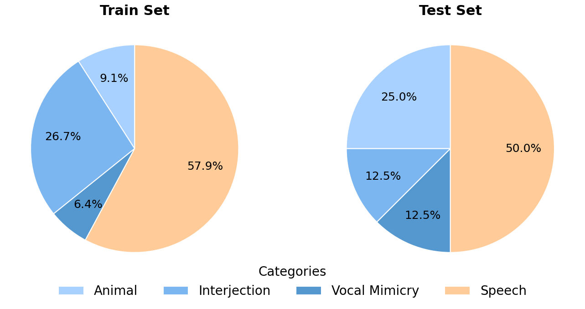
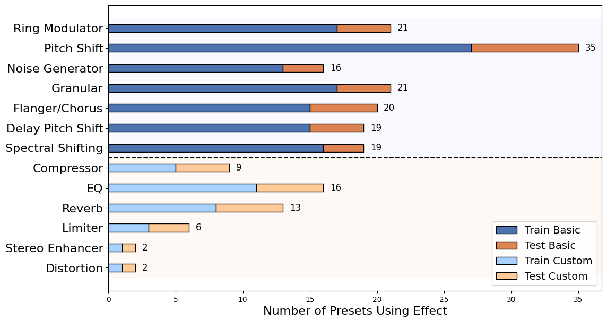

Designed Vocalizations Dataset
Advances in AI-based voice conversion have enabled a wide range of media applications, including films, audiobooks, and games. However, most research and public benchmarks still focus on natural human speech, leaving designed vocalizations such as monster growls and robotic voices underexplored, partly due to the lack of publicly available resources. To address this gap, we introduce the Designed Vocalizations Dataset, created by applying professional vocal effects processing to diverse vocal sources to produce paired original and effect-modified audio. We further provide a standardized test set with explicit seen/unseen splits over source types and preset styles to assess generalization under controlled conditions, together with baseline benchmark results for reproducible evaluation.
The full dataset will be released publicly after acceptance.
Dataset overview


Dataset structure
DesignedVocalizationsDataset/
README.md
LICENSE
metadata/
train_metadata.csv
test_metadata.csv
preset_metadata.csv
split_definition.json
audio/
train/raw/
train/designed/
test/source/
test/reference/